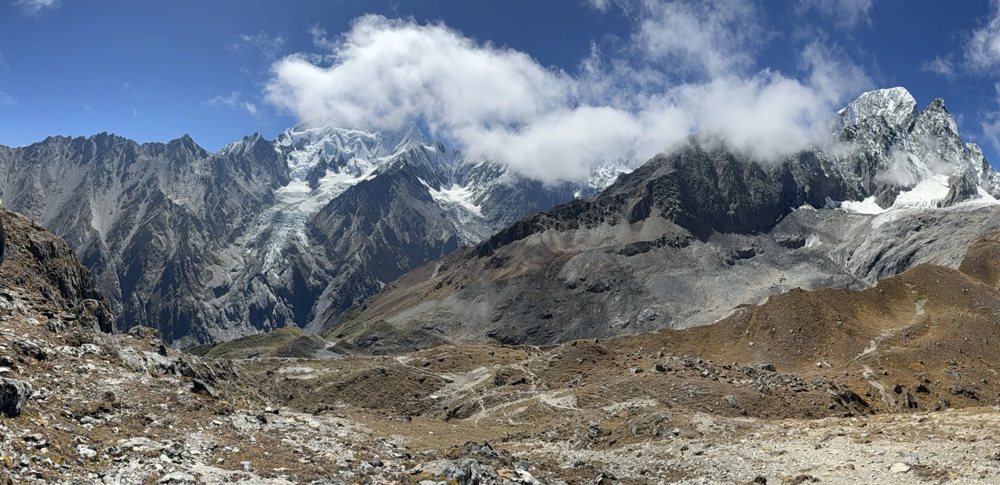
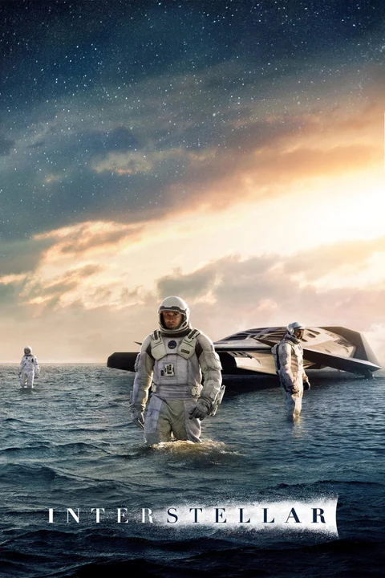
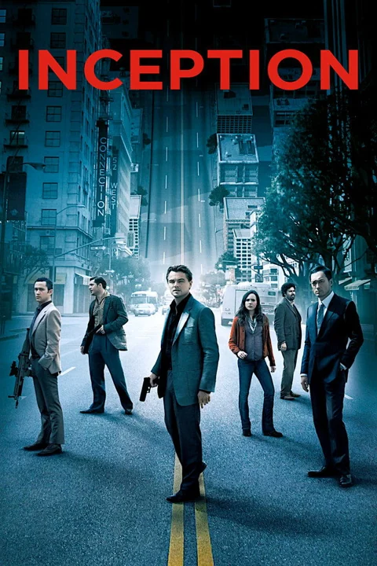
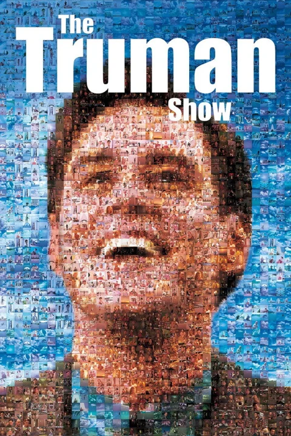
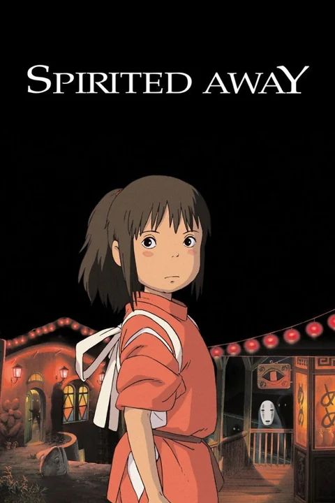
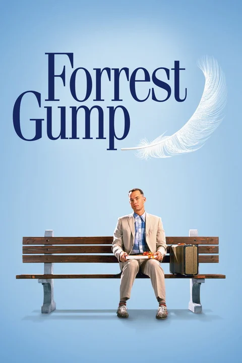
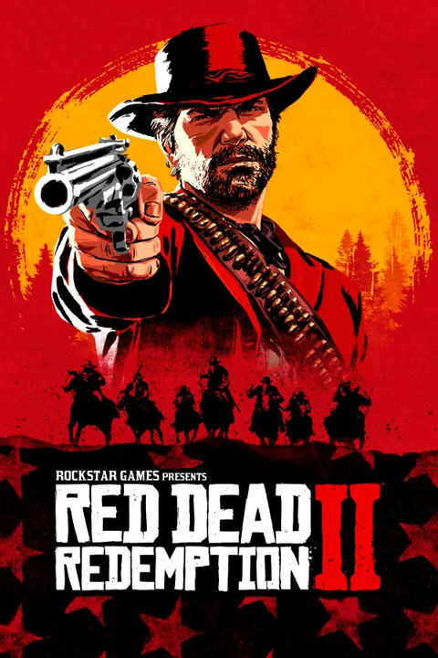
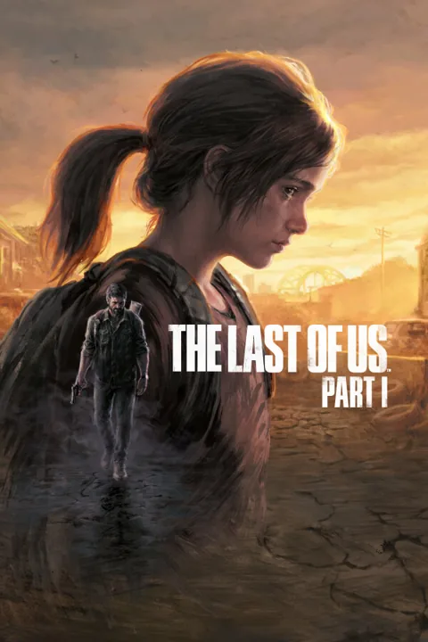
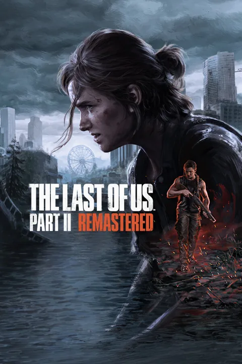
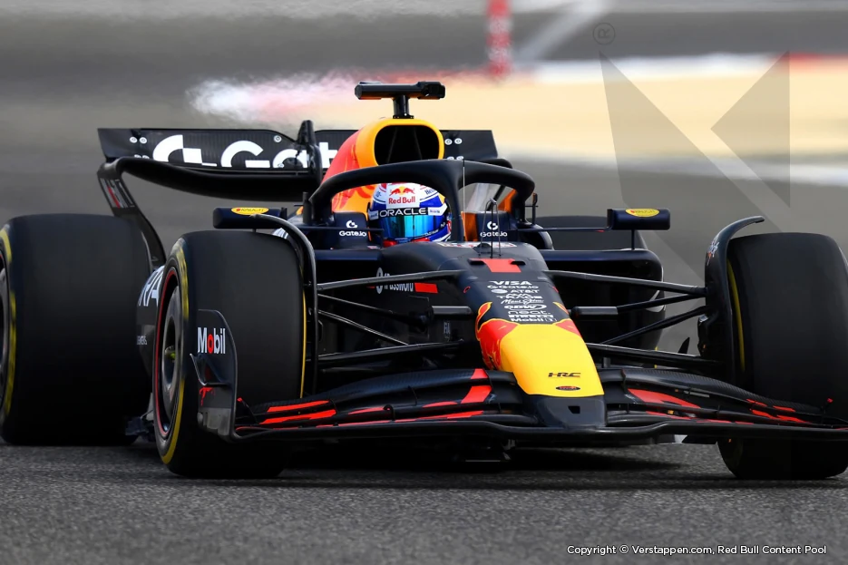

The Shawshank Redemption
1994Hope and freedom across years of confinement.

Hi, I'm Denis.
Exploring AI agents, with time for trails, films, games, and F1.
My first hiking route was Tiger Leaping Gorge. I prefer getting close to wild landscapes to noisy tourist spots, especially on high-altitude trails through peaks, gorges, and forests.
Select a photo to view it larger
I enjoy finding stories through lists like the IMDb Top 250 and Douban Top 250, setting aside time to step into another world on screen.
Hope and freedom across years of confinement.

A cosmic journey anchored in human connection.

Dreams within dreams blur the edges of reality.

Beyond a scripted life lies an unknown world.

Growing up in a strange world without losing yourself.

An ordinary life moving through extraordinary times.
IMDb Top 250 ↗Douban Top 250 ↗
A selection of classics. Posters via TMDB; film and poster rights belong to their respective owners. Official overview & image source

Red Dead Redemption GTA V GTA VI
The Last of Us I
The Last of Us IIMy interests include Rockstar's Red Dead Redemption and GTA series, as well as both The Last of Us Part I and Part II. From the frontier to city streets and a post-apocalyptic journey, each offers a different world and story.
Game images are official promotional materials. All images and related works belong to their respective rights holders. Official overview & image source
I enjoy trying new agent products and looking closely at how they work.
From conversation and tools to context, memory, and execution environments, I care about how design choices affect the experience. How much background can an agent understand? Can interrupted work resume? When should a person step in?
I keep asking what problem a new feature solves, and what it makes easier. I enjoy trying things myself and gradually forming my own judgement.
Following Red Bull Racing and Max Verstappen.

I look forward to Max's drives and enjoy working through the details: the car's strengths at each circuit, tyre strategy, pit-stop timing, and the opportunities a change in weather can create.
From qualifying to the race, I enjoy the mix of speed, judgement, and uncertainty.